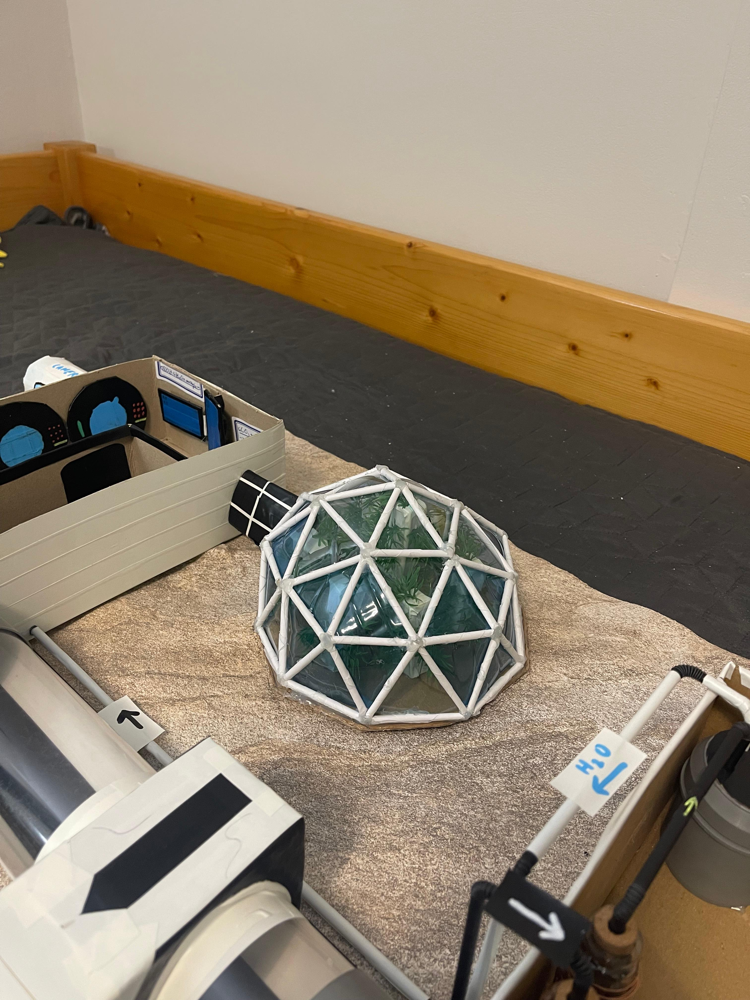

Sera
(dom geodezic cu turnuri hidroponice)

Descriere
Structură geodezică robustă care găzduiește turnuri hidroponice - plante cultivate fără sol, doar cu soluție nutritivă recirculantă.
Rol și importanță
- Producția de oxigen: plantele asigură parte din oxigenul necesar echipajului.
- Sursă de hrană: legume și plante proaspete pentru alimentație.
- Eficiență în utilizarea apei: hidroponia recirculantă economisește apă față de agricultura tradițională.
- Beneficii psihologice: plantele reduc stresul și contribuie la bunăstare.